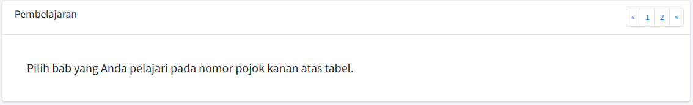
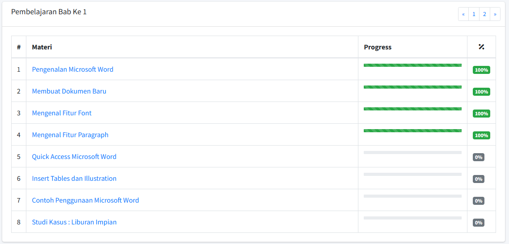

{% if current_user.is_authenticated and current_user.type == 'admin' %}
{% extends 'basemin.html' %}
{% else %}
{% extends 'base.html' %}
{% endif %}
{% block title %} Informasi {% endblock %}
{% block nav_item_info %} active {% endblock %}
{% block content %}

<div class="container">
    <div class="card">
        <div class="card-header">
            <h3 class="card-title">Tutorial Penggunaan</h3>
        </div>
        <div class="card-body" style="width: 85%;">
            E-materi memungkinkan siswa belajar dan memperoleh informasi di mana saja dan kapan saja sesuai dengan
            kebutuhan mereka. Hal ini memungkinkan siswa untuk belajar secara mandiri dan membuat proses belajar
            lebih fleksibel. Untuk menggunakan fitur ini siswa dapat memilih bab pembelajaran terlebih dahulu.
        </div>
        <div class="card-body">
            
        </div>
        <div class="card-body" style="width: 85%;">
            Akan muncul materi sesuai bab yang dipilih dan pelajaran dapat dimulai dari awal menuju ke akhir.
            <br>Sistem akan menjaga siswa melakukan interaksi sesuai aturan dan tidak dapat mengakses materi jika
            tidak sesuai urutan yang diberikan
        </div>
        <div class="card-body">
            
        </div>
    </div>
</div>

{% block chart %} {% endblock %}
{% endblock %}